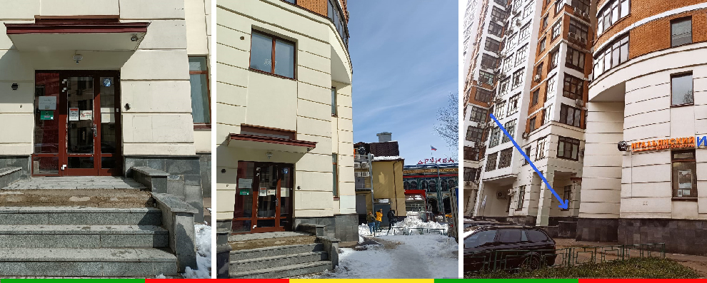

Как нас найти
Адрес, видео и подробный маршрут до нашего Центра
(вход с Проектируемого Проезда 2554), этаж 2, офис 7.
Видео — как найти вход

Маршрут от м. Новослободская
Перейти дорогу на светофоре, сразу после светофора направо до первого поворота налево в Проектируемый Проезд 2554. По этому проезду прямо и через 50 метров по правой стороне в 12-этажном жилом доме первый вход с крыльцом — вход в наш Центр. Справа от входной двери висит звонок, нужно позвонить и сказать администратору, что Вы идёте в Ensina-me. Заходите в здание и поднимаетесь на 2-й этаж, наш офис рядом с лестницей с табличкой Ensina-me. Добро пожаловать!
Маршрут от м. Менделеевская (выход № 2)
Необходимо идти из перехода прямо по улице Новослободская в сторону центра, сразу после KFC повернуть направо в Проектируемый Проезд 2554. По этому проезду прямо и через 50 метров по правой стороне в 12-этажном жилом доме первый вход с крыльцом — вход в наш Центр. Справа от входной двери висит звонок, нужно позвонить и сказать администратору, что Вы идёте в Ensina-me. Заходите в здание и поднимаетесь на 2-й этаж, наш офис рядом с лестницей с табличкой Ensina-me. Добро пожаловать!